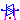
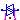

AC to AC converters
Extends from Modelica.Icons.Package (Icon for standard packages).
| Name | Description |
|---|---|
| Control components for AC to AC converters | |
|  SinglePhaseTriac | Triode for alternating current |
|  PolyphaseTriac | Triodes for alternating current |
Triode for alternating current
Simplified model of a triode for alternating current, built from two antiparallel thyristors.
thyristor1 has to be fired during the positive halfwave of the voltage.
thyristor2 has to be fired during the negative halfwave of the voltage.
Note: A real triac is fired in positive direction (thyristor1) by a positive gate current and in negative direction (thyristor2) by a negative gate current.
The triac goes in blocking condition when the current falls to zero.
This behaviour is simulated by the two firing gates fire1 and fire2:
fire1=false and fire2=false: gate current = 0, stay in blocking conditionfire1=true and fire2=false: gate current > 0, fire thyristor1fire1=false and fire2=true : gate current < 0, fire thyristor2fire1=true and fire2=true : forbiddenExtends from Modelica.Electrical.Analog.Interfaces.TwoPin (Component with two electrical pins).
| Name | Description |
|---|---|
| Ron | Forward state-on differential resistance (closed resistance) [Ohm] |
| Goff | Backward state-off conductance (opened conductance) [S] |
| Vknee | Forward threshold voltage [V] |
| useHeatPort | = true, if heatPort is enabled |
| T | Fixed device temperature if useHeatPort = false [K] |
| Name | Description |
|---|---|
| p | Positive electrical pin |
| n | Negative electrical pin |
| heatPort | Conditional heat port |
| fire1 | |
| fire2 |
Triodes for alternating current
Simplified model of m
triodes for alternating current, each built from two antiparallel thyristors.
thyristor1 has to be fired during the positive halfwave of the voltage.
thyristor2 has to be fired during the negative halfwave of the voltage.
Note: A real triac is fired in positive direction (thyristor1) by a positive gate current and in negative direction (thyristor2) by a negative gate current.
The triac goes in blocking condition when the current falls to zero.
This behaviour is simulated by the two firing gates fire1 and fire2:
fire1=false and fire2=false: gate current = 0, stay in blocking conditionfire1=true and fire2=false: gate current > 0, fire thyristor1fire1=false and fire2=true: gate current < 0, fire thyristor2fire1=true and fire2=true: forbiddenExtends from Modelica.Electrical.Polyphase.Interfaces.TwoPlug (Component with one polyphase electrical port), Modelica.Electrical.Polyphase.Interfaces.ConditionalHeatPort (Partial model to include conditional HeatPorts in order to describe the power loss via a thermal network).
| Name | Description |
|---|---|
| m | Number of phases |
| Ron | Forward state-on differential resistance (closed resistance) [Ohm] |
| Goff | Backward state-off conductance (opened conductance) [S] |
| Vknee | Forward threshold voltage [V] |
| mh | Number of heatPorts=number of phases |
| useHeatPort | = true, if all heat ports are enabled |
| T[mh] | Fixed device temperatures if useHeatPort = false [K] |
| Name | Description |
|---|---|
| plug_p | Positive polyphase electrical plug with m pins |
| plug_n | Negative polyphase electrical plug with m pins |
| heatPort[mh] | Conditional heat ports |
| fire1[m] | |
| fire2[m] |